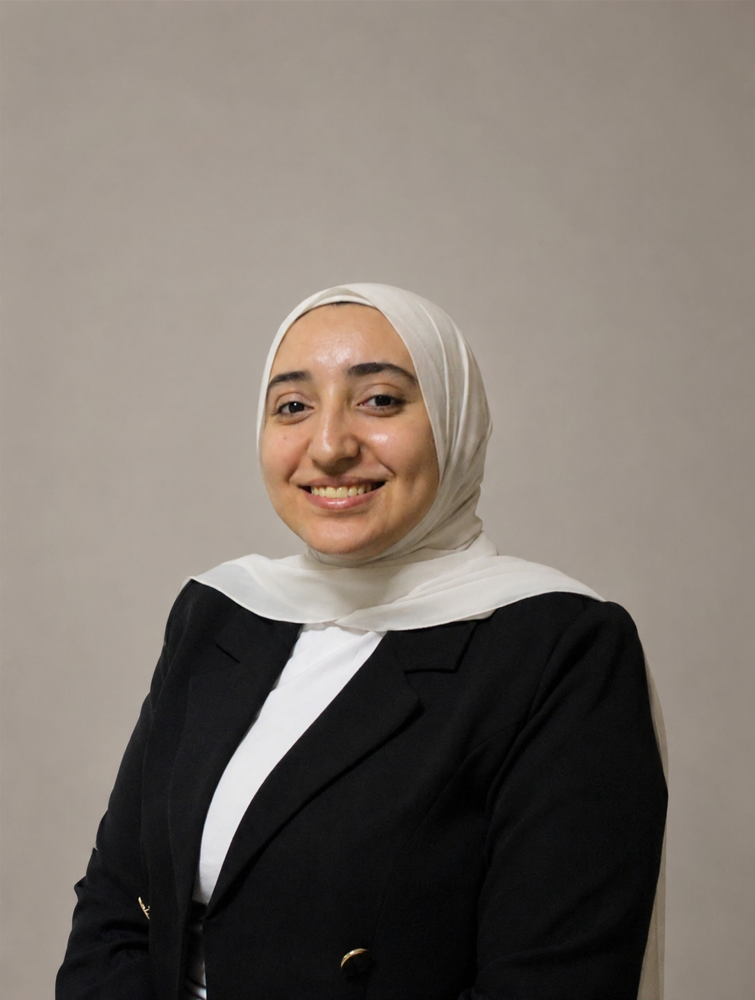

Teaching Assistant
Badr University in Assiut (BUA)
Assisting in delivering AI and Data Science labs, improving student understanding of core concepts, and collaborating with faculty to enhance learning outcomes.
AI-focused Computer Science graduate, Teaching Assistant, and Researcher passionate about building end-to-end intelligent systems, from data processing to scalable deployment.
Download CV
Assiut University | Oct 2025 - Present
Currently pursuing a Master's degree with a core research focus on Artificial Intelligence, Deep Learning, and Natural Language Processing (NLP).
Assiut University | 2021 - 2025
GPA: 3.68/4.0 (Very Good with Honors).
Graduation Project: AI-Based Exam Proctoring System.
Assisting in delivering AI and Data Science labs, improving student understanding of core concepts, and collaborating with faculty to enhance learning outcomes.
Developed an AI-powered OCR system to extract and structure information from Egyptian national ID cards using NLP and transformer models.
Developed robust APIs using WSO2 Integration Studio, Micro Integrator, API Manager, and Oracle PL/SQL for optimized data aggregation.
Real-time AI system for remote exam monitoring using face recognition, gaze tracking, head pose, object, and voice detection. Built with ASP.NET Core and Power BI dashboard.
Built forecasting models (ARIMA, Prophet, Random Forest, XGBoost) to predict trends. Designed interactive dashboards with Plotly (Streamlit app) and Power BI.
Classified questions into Easy, Medium, and Hard levels using TF-IDF and Logistic Regression with 90.25% accuracy. Built an interactive Streamlit web app.
Developed an AI Gym Coach using Deep Learning, achieving 99.9% accuracy with LRCN and 100% with Conv-LSTM using Pose Estimation frameworks.
Developed a CV application translating sign language to text using Deep Learning and CNN, achieving 99% accuracy for 5 dynamic signs.
Ranked 128th among all Egyptian University teams. Ranked 18th on Day 8 Qualifications, and 6th among Assiut University teams.
HR Supervisor (Jul 2023 - Present). Leading recruitment and onboarding. Contributed to the organization of DevFest 2022, 2023, and 2024.
Mentor and Problem Setter (2022 - 2025). Assisted newcomers and set problems for Assiut Ramadan Marathons 2024 & 2025.
Let's collaborate on amazing AI solutions or academic research. Feel free to reach out directly through any of the channels below!